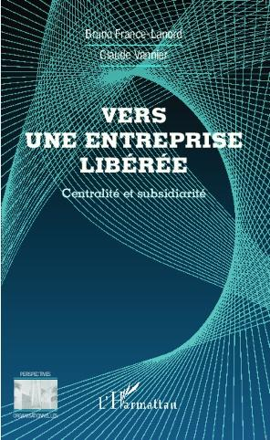

En tant que membre du Comité Scientifique de la collection Ad Valorem de l’éditeur L’Harmattan, il m’a été demandé de rédiger la préface du livre en cours de rédaction « L’entreprise libérée ».

Préface
Lorsque, à la demande de Valérie Lejeune, Directrice de la collection Ad Valorem, j’ai commencé à lire le livre, j’ai été un peu déconcerté de parcourir une sorte d’autobiographie de l’auteur décrivant à la première personne de manière très directe ses années d’expérience professionnelle très variées avec de nombreuses réussites, essentiellement dans le domaine de la production industrielle. Surpris, mais comme pour un roman, capturé par le sympathique récit, l’envie de connaître la suite des étapes de la vie professionnelle d’un ingénieur quelque peu rebelle était créée. J’ai poursuivi la lecture.
Je fus aussi amusé de retrouver des anecdotes similaires aux miennes, par exemple, voir l’auteur convaincre, en la pratiquant, de l’intérêt de la méthode « PERT » de planification de multiples tâches imbriquées au sein d’un projet. L’auteur a dû faire preuve de beaucoup de ténacité pour obtenir des temps de calcul ! La méthode PERT, innovante à l’époque, était rendue praticable grâce à la puissance toute relative des ordinateurs existants. Il fallait introduire les données grâce à des cartes perforées et au minimum une heure de calcul était nécessaire pour traiter un réseau de 500 tâches. Aujourd’hui sur un micro-ordinateur, une fois les données saisies à l’écran, quelques secondes suffisent pour traiter et voir les résultats colorés à l’écran.
L’attention du lecteur ayant été ainsi acquise, ce dernier, en particulier s’il dirige une société et souhaite élargir sa culture en gouvernance d’entreprise, trouvera dans la suite du livre une analyse approfondie des modèles d’entreprises issus ou voisins de l’approche « L’entreprise libérée » avec une mise en oeuvre exemplaire par l’entreprise FAVI. Modèles faisant une très large confiance aux membres du personnel organisés en unités autonomes.
L’hypothèse sous-jacente est que les motivations des personnes sont considérées comme situées à un niveau élevé dans le classique diagramme Maslow, diagramme que l’auteur commente en profondeur. L’auteur situe son expérience personnelle en regard de ces modèles. En simplifiant, comme M. Jourdain, il en pratiquait certaines recommandations souvent de simple bon sens, sans vraiment le savoir.
Utilisant cette expérience personnelle, y compris comme professeur et conférencier ainsi que sa connaissance intime de ces modèles, l’auteur décrit alors le modèle qu’il préconise. Il l’a appelé « Janus », peut-être en référence au dieu romain Janus, dieu à deux têtes capable d’ouvrir à la fois les portes vers le passé et le futur. De manière détaillée et très ouverte, il décrit dans le détail son modèle avec des tableaux sur la manière de l’appliquer. Partie très utile, pour ceux, sans doute des consultants plutôt que des dirigeants eux-mêmes, qui voudront mettre en oeuvre son modèle pour transformer une entreprise.
Le livre contient divers schémas illustrant la vision de l’auteur que je fais volontiers mienne, à savoir « une idée complexe n’existe vraiment que si elle peut être présenté grâce à un schéma ». Question sous-jacente très profonde : « Peut-on se passer des mots pour penser et communiquer ? ». Personnellement, je crois que oui.
Alors que souvent les dirigeants critiquent les normes telles ISO 9001, 14 001,... comme lourdes et seulement contraignantes, il explique avec des exemples concrets comment s’en servir comme des leviers pour la transformation des entreprises.
L’auteur regrette de voir que ces modèles sont peu appliqués en France. En liaison avec les nombreux contacts qu’il a su nouer, pourrait-il consacrer du temps à établir un diagnostic explicitant les raisons de ce désintérêt des dirigeants pour la mise en pratique de ces modèles, dont le sien ! et suggérer des recommandations. Tel pourrait être le thème de son prochain livre.